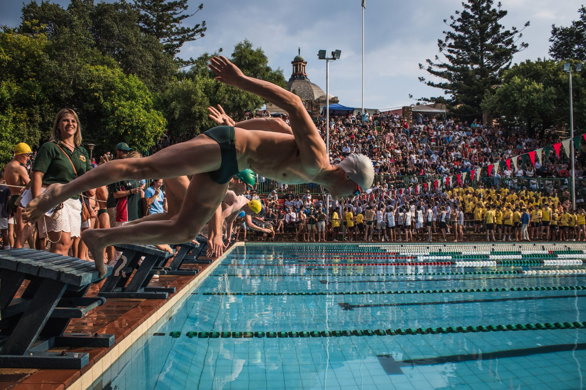

A Scholarship Story That Starts in the Water
The College Swimming and Diving Coaches Association of America (CSCAA) recently announced its 2026 Jean Freeman Scholarship recipients — a prestigious recognition given each year to outstanding student-athletes who demonstrate excellence both in the pool and in the classroom. News like this is more than a headline. For families in Wesley Chapel, Land O' Lakes, and across the Tampa Bay area, it is a powerful reminder that the hours spent training, competing, and improving in aquatic sports can lead to real, life-changing opportunities.
Whether your young athlete is a competitive swimmer chasing faster split times or a water polo player developing their shot and field vision, the journey they are on right now is laying the groundwork for something much bigger than the next tournament or meet.
What Is the Jean Freeman Scholarship?
The Jean Freeman Scholarship is awarded by the CSCAA to collegiate swimmers and divers who exemplify strong academic achievement alongside their athletic performance. The scholarship honors the legacy of Jean Freeman, a champion of student-athlete development at the collegiate level. Recipients are selected based on their commitment to their sport, their academic standing, and their character — a combination that college programs actively seek when recruiting young athletes.
Understanding that these scholarships exist, and what coaches and programs look for in candidates, gives families an early advantage in the recruiting process.
What College Programs Look for in Aquatic Athletes
Earning a college scholarship in swimming or water polo is not simply about being the fastest in the pool or scoring the most goals. College coaches recruit well-rounded young athletes who demonstrate the following qualities:
- Consistent athletic performance — coaches want to see improvement over time, not just a single standout race or game.
- Academic integrity — strong grades and a genuine commitment to schoolwork signal that a recruit can handle the demands of being a student-athlete.
- Coachability and character — how a player responds to feedback, supports teammates, and handles adversity matters enormously at the collegiate level.
- Early exposure to competition — participating in club programs, regional tournaments, and recognized meets puts young athletes on the radar of college recruiters sooner rather than later.
Starting the Journey Early in Tampa Bay
The good news for families in the Wesley Chapel and Land O' Lakes area is that exceptional training resources are right in your backyard. At Nexar Aquatic Academy, young swimmers and water polo players receive structured, high-quality coaching that develops both the physical skills and the competitive mindset that college programs value. Building those habits early — strong work ethic, attention to technique, and a love for the sport — creates the foundation that scholarship opportunities are built upon.
Parents often wonder when the right time is to start thinking about college recruitment. The answer is almost always earlier than you might expect. Many college coaches begin identifying prospects during a player's freshman or sophomore year of high school, which means the training and competition experience your young athlete accumulates during their middle school and early high school years genuinely matters.
Practical Steps for Families to Take Now
- Encourage your young athlete to maintain strong academic habits alongside their sport — grades open doors that athletic talent alone cannot.
- Create a highlight video or performance log that documents times, stats, and competition results as they progress.
- Research NCAA, NAIA, and NJCAA eligibility requirements so your family understands the recruiting timeline and rules.
- Attend college showcases and tournaments where recruiters are present, and help your athlete learn how to communicate professionally with coaches.
- Talk with coaches at Nexar Aquatic Academy about your athlete's goals — experienced coaches can offer guidance on realistic recruitment pathways and competitive benchmarks.
The Bigger Picture
Every recipient of a scholarship like the Jean Freeman Award started exactly where your young athlete is right now — in a pool, working hard, learning their sport, and dreaming about what comes next. The path from local practice lanes in the Tampa Bay area to a college roster is absolutely achievable, and it begins with the commitment your athlete makes every single day. That commitment, guided by great coaching and supported by an informed family, is what turns potential into possibility.
Ready to get in the water?
First practice is completely FREE — no commitment needed.